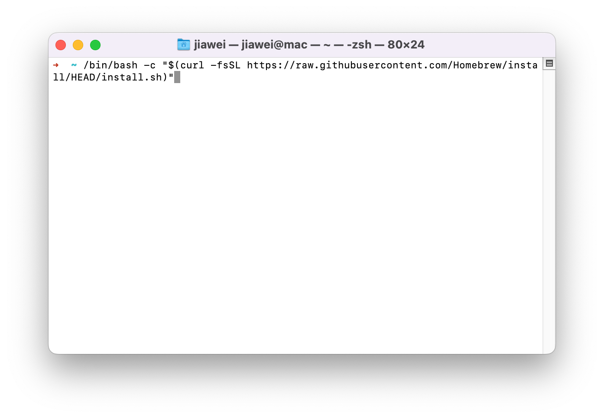
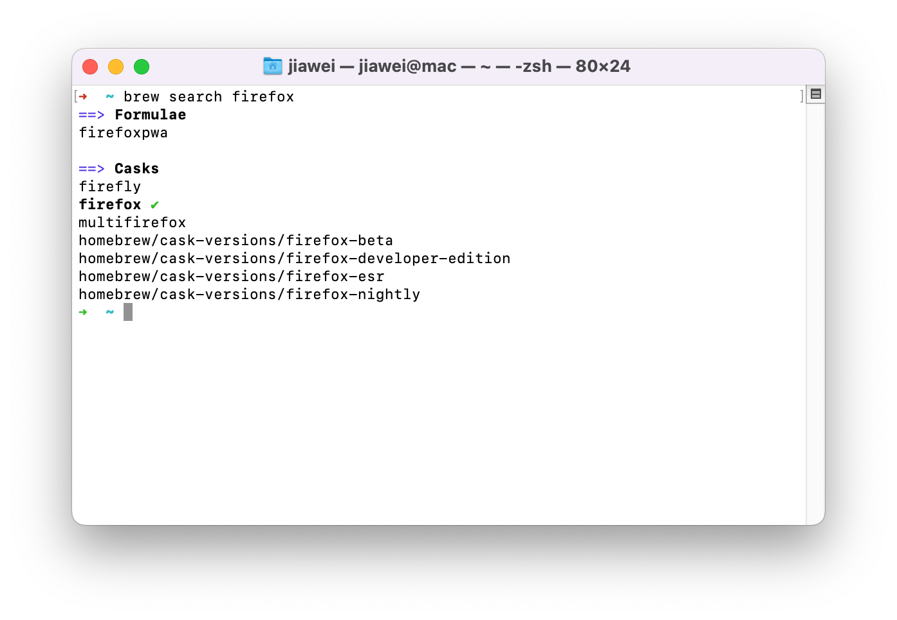
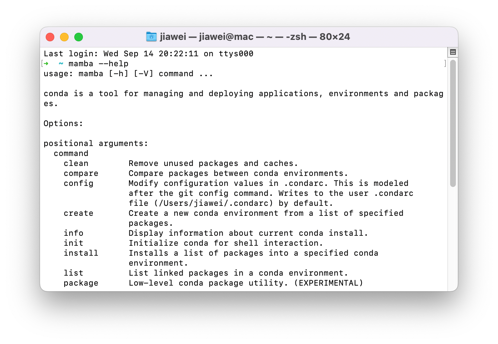
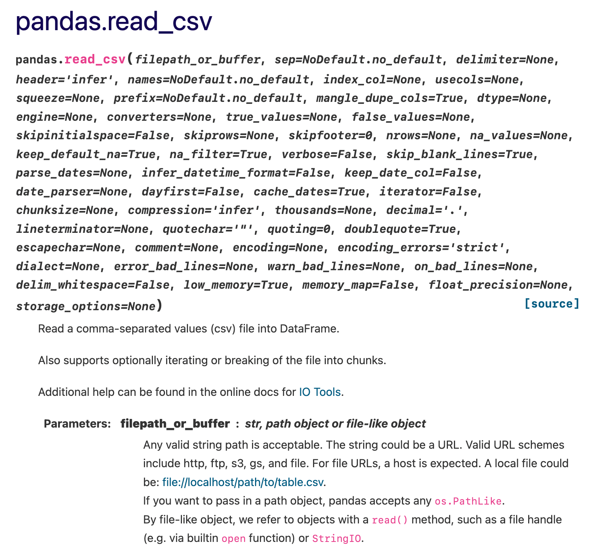
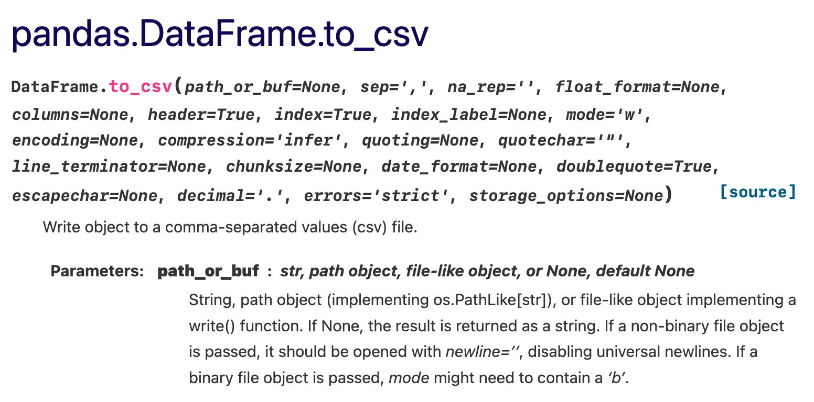

import someones_sick_projectTutorial 1: Setup and Introduction to Python and Pandas
Introduction
Welcome to Introduction to Data Analytics in Business!
I’m your TA for this course, Jiawei. I have just finished my master’s degree in Applied Data Science, which you have just started. It has been a wild ride and I really hope you will enjoy the journey for next 2 years.
Some background about me:
- Bachelor’s degree in Economics, didn’t believe in it, moved to data science.
- Generalist or jack of all trades for all sorts of things related to data science, e.g. programming, machine learning, data engineering, data communication.
- Too academic for industry and too industrial for academia.
- Research interests: AI in Economics.
- Professional experiences: Mostly in Finance, from stock exchange to high frequency market making, from DAX corporations to startups.
Tutorial time is extremely limited, it is impossible to give you a comprehensive tutorial on anything. I will only cover principles that help you learn on your own. If you don’t succeed to follow, please email me (jiawei@lecittainvisibi.li). We can arrange zoom meetings of any form to address any issues you are facing, e.g. workflows, algorithms, data analytics, readings. Don’t hesitate to ask for anything, especially at this early stage of your study.
Setup
Package Managers
A package manager is a software tool that automates the process of installing, upgrading, and removing computer programs (incl. software, applications, packages) for a computer consistently. You can think of it as an “App Store” for your computers without accounts, passwords and clicking with a mouse. I recommend using Winget for Windows, Homebrew for macOS. For Linux and Windows Subsystem for Linux, the choice of package managers usually depends on which distribution you are using.
Windows
Winget should be pre-installed on your Windows PC. If not, refer to documentation. You can search, install, uninstall applications in Power Shell or Command Prompt.
winget search <APPLICATION-NAME>
winget install <APPLICATION-NAME>
winget upgrade <APPLICATION-NAME>
winget uninstall <APPLICATION-NAME>For this course, I recommend installing the following software:
winget install Git.Git
winget install CondaForge.Mambaforge
winget install Microsoft.WindowsTerminal
winget install Microsoft.VisualStudioCodeAdd the following directories to your Environment Variable Path:
C:\Users\<USER-NAME>\mambaforge\condabin
C:\Program Files\Git\cmdVerify that you have successfully installed git and mambaforge with the following command:
git --help
mamba --helpmacOS
Homebrew needs to be installed by the user of macOS. Open your terminal, type the following command:
/bin/bash -c "$(curl -fsSL https://raw.githubusercontent.com/Homebrew/install/HEAD/install.sh)"
Similar to Winget, you can search, install, uninstall applications in Terminal.
brew search <APPLICATION-NAME>
brew install <APPLICATION-NAME>
brew upgrade <APPLICATION-NAME>
brew uninstall <APPLICATION-NAME>
For this course, I recommend installing the following software:
brew install git mambaforge iterm2 visual-studio-codePlease run the following to setup your shell for mambaforge:
conda init "$(basename "${SHELL}")"Verify that you have successfully installed git and mambaforge with the following command:
git --help
mamba --help
Git
Git is a version control software. Forget about presentation_version_final.pptx presentation_version_final_final.pptx on your shared folders that nobody can figure out which file to use. Git gives you the superpower to track code changes and sync your work with your teammates. We start from the very basics, which is the file system navigation and the clone command.
In your terminal (it can be any terminal, e.g. Windows Terminal, iTerm2, VS Code), you usually start at the user’s folder, denoted as ~. You can list your current files with ls command:
lsThen you can move to different folder using cd:
cd DocumentsIt is always recommended to have a unique folder for your code and projects. Let’s create a folder called Code using mkdir:
mkdir CodeAnd we can cd into it:
cd CodeNow, we are ready to clone this course’s Git repository using git:
git clone https://gitlab.com/ComputationalScience/intro-data-analytics.gitAgain, we cd into it:
cd intro-data-analyticsThis folder has already been initialized, and it is your “local” folder, which is different to the “remote” folder that everyone sees. You can do all the git operations locally without pushing to the remote folder. For this intro-data-analytics folder, you cannot push any changes because you do not have the permission, which might be a good thing since you know you will not accidentally delete the whole repository for the whole class.
Unlike OneDrive or iCloud Dive, the separation of local and remote folders means changes are not synced automatically. You can sync your local folder from the remote folder using git pull if you do not have any local changes:
git pullThe second exercise in exercise_1.pdf gives you the opportunity to create a local git repository and push your changes to GitLab.
Further Reading
Git Basics - Pro Git
Visualizing Git Concepts with D3
Git from the Bottom Up
Virtual Environments
By default, any Python interpreter installed runs in its own global environment. They aren’t specific to a particular project. For example, if you just run python, python3, or py at a new terminal, you’re running in that interpreter’s global environment. Any packages that you install or uninstall affect the global environment and all programs that you run within it. This means that if Project A requires pandas at version 0.9 while Project B requires pandas at version 1.1, it is impossible to work on both project simultaneously.
To prevent such clutter, developers often create a virtual environment for a project. When you install a package into a virtual environment, any packages you install are installed only in that environment. When you then run a Python program within that environment, you know that it’s running against only those specific packages.
Mambaforge
If you have followed the instructions and have successfully installed the recommended packages, that means you have the best Python package and environment manager on your computer, which is great! Mambaforge is basically miniconda with the following features pre-configured:
conda-forgeset as the default (and only) channel to provide more updated and comprehensive coverage of packages.Mambain place ofcondato provide better dependency solving and faster package installation. Even though I usemambainstead ofcondathroughout this tutorial, the command withmambais the same asconda. You can refer to conda’s cheat sheet and just replacecondawithmamba.
It is totally fine if you have no idea what this means. I have used Python for almost 5 years, Mambaforge is hands down my favourite configuration for package and environment management for data science in Python. You may also have heard about pip and virtualenv, which are the mainstream package and environment management tools for Pythonista. The main advantage of conda over pip is that, you can install and update python itself within a conda environment. With pip, you have to install an entirely new virtual environment every time you want to switch to a different python version.
Create Virtual Environments
Let’s create a virtual environment called machine-learning:
mamba create -n machine-learningYou can then activate this environment:
mamba activate machine-learningNow you can install packages and run code in this specific environment, without worrying about conflicts with your other projects.
You can also leave the environment by deactivating:
mamba deactivateFor this course, I have prepared a environment.yml file that contains all packages required, you can create an environment defiend by environment.yml called intro-data-analytics and install all required packages using one command:
mamba env create -f environment.yml
mamba activate intro-data-analyticsInstall Python and Packages
Most packages you need for this course should already been included in environment.yml. Here I talk about installing packages without using environment.yml file. Since you are using conda or mamba, it is always preferred to install packages with conda or mamba if they are available. Make sure you are in the right environment, and use the following command:
mamba install python=3.10 pandas jupyterlabThere are always cases when you have to use pip because the packages you want are not available on conda-forge:
pip install watermarkNow, with everything installed, you are good to go. To verify the installation is working, let’s first launch jupyter lab:
jupyter labPrint Environment Information
Printing out your environment information ahead of doing any coding can be very beneficial. For yourself, you can easily identify whether you are in the right environment or have the required packages installed. For others, they can identify some unobvious problems like package version or operating systems before going too deep into the code. We will use an extension called watermark. In your jupyter notebook, type the following command:
%load_ext watermark
%watermark --machine --python --packages numpy,pandas,sklearnFurther Reading
Tutorial of Jupyter Lab
A Short Video Tutorial of watermark
Conda: Myths and Misconceptions
Understanding Conda and Pip
Nouns and Verbs in Python, and Pandas
In an over-simplified fashion, all commands in Python can be understood as a noun or a verb. A noun is a variable. A verb usually refers to some function to do something. Lots of these nouns and verbs are created by other people, so you have to import them:
And you can use them this way:
someones_sick_project.say_hello()Hello World!A noun usually comes with some properties and actions related to them. Let’s say you have a barbecue grill named my_bbq. You can see that it is initialized with a general type name, BbqGrill(), with capital letters in each word.
my_bbq = someones_sick_project.BbqGrill(brand="Weber", model="E-330")
my_bbq<someones_sick_project.BbqGrill at 0x1432b7b80>When there are enough user of a package, a convention is born because we are too lazy to type someones_sick_project every time. You can abbreviate someones_sick_project with the following command and do the same things:
import someones_sick_project as sspssp.say_hello()Hello World!my_bbq = ssp.BbqGrill(brand="Weber", model="E-330")
my_bbq<someones_sick_project.BbqGrill at 0x1432b4940>This specific barbecue grill, my_bbq, has some properties, notice that these nouns comes without parenthesis:
my_bbq.brand'Weber'my_bbq.model'E-330'And you can do something with my_bbq, notice that the verb comes with parathens and how it interacts with its related noun:
my_bbq.grill()🔥🔥🔥 Weber E-330 is on fire! 🔥🔥🔥Now, we can finally look at pandas. The convention is to import them as pd:
import pandas as pdThere are mainly two types of things in pandas: Series and DataFrame. Series is a type for 1-dimensional vector, and DataFrame is a type for multidimensional matrix consisting of many series as its column. We can initialize a series and a dataframe in the following way:
a_series = pd.Series([1, 2, 3])
a_series0 1
1 2
2 3
dtype: int64a_dataframe = pd.DataFrame({"col_1": [1, 2, 3], "col_2": [4.1, 5.4, 6.1]})
a_dataframe| col_1 | col_2 | |
|---|---|---|
| 0 | 1 | 4.1 |
| 1 | 2 | 5.4 |
| 2 | 3 | 6.1 |
We can then inspect their properties:
a_series.dtypesdtype('int64')a_series.indexRangeIndex(start=0, stop=3, step=1)a_dataframe.dtypescol_1 int64
col_2 float64
dtype: objecta_dataframe.indexRangeIndex(start=0, stop=3, step=1)And do some actions related to a_series and a_dataframe:
a_series.info()<class 'pandas.core.series.Series'>
RangeIndex: 3 entries, 0 to 2
Series name: None
Non-Null Count Dtype
-------------- -----
3 non-null int64
dtypes: int64(1)
memory usage: 152.0 bytesa_series.describe()count 3.0
mean 2.0
std 1.0
min 1.0
25% 1.5
50% 2.0
75% 2.5
max 3.0
dtype: float64a_dataframe.info()<class 'pandas.core.frame.DataFrame'>
RangeIndex: 3 entries, 0 to 2
Data columns (total 2 columns):
# Column Non-Null Count Dtype
--- ------ -------------- -----
0 col_1 3 non-null int64
1 col_2 3 non-null float64
dtypes: float64(1), int64(1)
memory usage: 176.0 bytesa_dataframe.describe()| col_1 | col_2 | |
|---|---|---|
| count | 3.0 | 3.000000 |
| mean | 2.0 | 5.200000 |
| std | 1.0 | 1.014889 |
| min | 1.0 | 4.100000 |
| 25% | 1.5 | 4.750000 |
| 50% | 2.0 | 5.400000 |
| 75% | 2.5 | 5.750000 |
| max | 3.0 | 6.100000 |
a_dataframe.head(1)| col_1 | col_2 | |
|---|---|---|
| 0 | 1 | 4.1 |
Now, when you read pandas documentation, you should not be too confused now. Let’s say, you are looking for pandas.read_csv():

pandas.read_csv()The function is directly under pandas, which means it is something you can directly use following pd.:
countries = pd.read_csv("https://raw.githubusercontent.com/cs109/2014_data/master/countries.csv")
countries.head(5)| Country | Region | |
|---|---|---|
| 0 | Algeria | AFRICA |
| 1 | Angola | AFRICA |
| 2 | Benin | AFRICA |
| 3 | Botswana | AFRICA |
| 4 | Burkina | AFRICA |
Here is the documentation for a very similar function, pandas.DataFrame.to_csv():

pandas.DataFrame.to_csv()Notice anything different? This function applies to DataFrame, which means that you can only use it for some dataframe that you created:
# This doesn't work
# pd.to_csv("https://raw.githubusercontent.com/cs109/2014_data/master/countries.csv")
# This works
countries.to_csv("countries.csv")You should have the mental model to read 10 minutes to pandas and work on your exercise now.
Further Reading
10 minutes to pandas
Effective Pandas
Python for Data Analysis
Object-Oriented Programming - Composing Programs
Data Model - Python Documentation